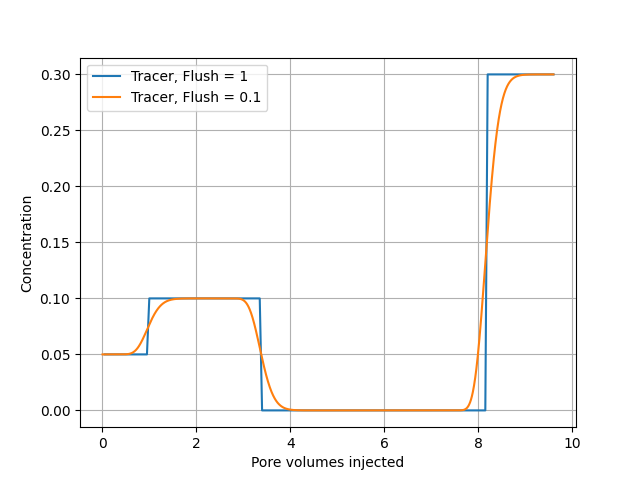

This input file defines a one-dimensional reactive transport simulation in which multiple injected fluids are flushed through a porous column. The example demonstrates coupling between advection, aqueous geochemistry, and time-dependent injection schedules.
The goal of this simulation is to illustrate:
The example is intentionally simple and focuses on transport behavior, not mineral reactions, ion exchange or surface complexation. There is only a pH calculation done for each step.
Temp 130
Pres 800000.0
Imp 0
#VolRate 0.2
# ml
Volume 40
NoBlocks 20
Flush 1
debug 0
porosity 0.5
#add_species "ions.txt"
BASIS_SPECIES
# Name a0 Mw analytical logK
Tracer 5 5 /ANA 0 /
/end
NumericalJacobian 0
chemtol
1e-7 1e-8
/end
INJECT 1
#solution name, time [hours], flow rate [ml/hour]
1 8 0.2
/end
INJECT 0
#solution name, time [hours], flow rate [ml/hour]
0 8 0.4
/end
INJECT 3
#solution name, time [hours], flow rate [ml/hour]
2 16 0.1
/end
geochem
solution 0
--Initial solution in column
Tracer 0.05
/end
solution 1
--Injected brine 1
Tracer .1
/end
solution 2
--Injected brine 2
Tracer .3
/end
/end
Explanation of input file:
Global model settings:
Temp:Temperature inside column of 130 \( ^\circ\text{C} \)
Pres:pressure of solution, units: Pascal, default \( 8\cdot 10^5 \) Pa
Imp: Implicit (Imp = 1) or explicit (Imp = 0) integration.
Column geometry and discretization:
Volume:Total column volume, 40 mL
NoBlocks:Number of grid blocks, 20
Porosity:porosity 0.5
Transport control flags:
Flush: Controls how much of the pore volume of each block is flooded during a time step. If Flush=1, exactly the time step is chosen such that 1 block pore volume is flushed during each simulation time step.
debug:writes extra information to screen, if set to zero output is disabled.
Chemical system information:
BASIS_SPECIES: user defined specie, the user has to give in the molecular weight, the Bohr radius and a model for the logK. If ANA is used the numbers \( a_1\ldots a_6 \) has to be entered and the following formula is used
Here \( \log K = 0 \). Optionally HKF may be used, then we use the HKF equation of state [1] [2], the default values already implemented are those defined in the SUPCRT thermodynamic database [3].
BASIS_SPECIES
# name a0 mol_weight
# HKF parameters: DeltaG DeltaH S a1 a2 a3 a4 c1 c2 omega
ACE- 5 59.04 / HKF -88270 -116160 20.6 7.7525 8.6996 7.5825 -3.1385 26.3 -3.86 1.3182 /
/end
SECONDARY_SPECIES
# DeltaG DeltaH S a1 a2 a3 a4 c1 c2 omega
ACEH = ACE- + H+ /HKF -94760 -116100 42.7 11.6198 5.218 2.5088 -2.9946 42.076 -1.5417 -0.15 /
/end
MINERAL_PHASES
# HKF parameters: mol_volume DeltaG DeltaH S a1 a2 a3 a7
WITHERITE = Ba+2 + HCO3- - H+ / HKF 45.81 -278400 -297500 26.8 21.5 11.06 -3.91 /
/end
The input values must use the same units as in the paper by [3]
Optional numerical constraints:
Numericalacobian:if zero, analytical Jacobian is used. Should always be zero, but in case the solver does not converge one can try to put it to 1, which would indicate a bug in the analytical implementation.
chemtol: Sets numerical convergence criteria, default is 1e-7 1e-8.
Injection schedule:
The simulation uses three injection stages, each defined by an INJECT block.
INJECT 1
#solution name, time [hours], flow rate [ml/hour]
1 8 0.2
/end
It is possible to use the global keyword VolRate if the flow rate is kept constant during simulation.
Geochemical definitions:
geochem .. /end: defines the geochemical block
The initial column solution is always the first one, and in this case solution 0. Ion exchange, mineral reactions has to come right after this solution.
The simulation set up:
The file is run by using TRANSPORT keyword on the command line
Terminal>GeoChemX TRANSPORT <input_file>
Transport and aqueous chemistry are solved sequentially in each grid block. In the file <root_name>OneDEff.out the time steps, pore volumes and concentrations are tabulated, and can easily be imported in to python using Pandas pandas.read_csv("<root_name>OneDEff.out", sep ="\t").
#<root_name>OneDEff.out
Time PVinj Tracer pH
0.0166667 0.005 0.05 5.92069
0.0333333 0.01 0.05 5.92069
0.05 0.015 0.05 5.92069
0.0666667 0.02 0.05 5.92069
....
In figure 1 we show the effluent concentration for different values of the Flush keyword. Note that there is no numerical dispersion for Flush=1, by adjusting this value one can also model diffusion and dispersion.
Figure 1: Tracer concentrations out of the core, Flush=1 and Flush=0.1.

Before solutions are injected into the column they are equilibrated, this is a necessary step to estimate a pH for the solution. Therefore the solver equilibrates the solution before injecting, the results of those calculations are stored in the files <root_name>_init_<solution_name>_aq.out, <root_name>_init_<solution_name>_buffer.out, <root_name>_init_<solution_name>_species.out and <root_name>_init_<solution_name>_solution.out.
The Finite Volume (FV) method is based on the integral form of the mass balance equations [4],
$$ \begin{align} \frac{1}{\partial t}\left(\int_{V} \phi \totalconc{i}\,dV\right) + \int_{A=\partial V} \vec{J_{i}}^t \cdot \hat{\vec{n}}\,dA = \int_{V} \phi r_i\,dV\,, \tag{2} \end{align} $$where \( \hat{\vec{n}} \) is the outward-pointing normal vector to the boundary \( A \) of the volume \( V \). This equation can be rewritten in terms of volume-averaged variables as follows:
$$ \begin{align} V\cdot\partial_t\cellavg{\phi c_i} + \int_{A=\partial V} \vec{J_{i}}^t \cdot \hat{\vec{n}}\,dA = V\cdot\cellavg{\phi r_i}\,. \tag{3} \end{align} $$By integrating this equation from \( t=t_i \) to \( t_f=t_i+\Delta t \), we find:
$$ \begin{align} V\cdot\left[\cellavg{\phi c_i}^{n+1}-\cellavg{\phi c_i}^{n}\right] + \int_{t_i}^{t_f}\int_{A=\partial V} \vec{J_{i}}^t \cdot \hat{\vec{n}}\,dA\,dt = V\cdot\Delta t\cdot\cellavg{\phi r_i}^{\star}\,, \tag{4} \end{align} $$where the \( \star \)-superscript denotes the time-average. The flux term can be written as
$$ \begin{align} \int_{t_i}^{t_f}\int_{A=\partial V} \vec{J_{i}}^t \cdot \hat{\vec{n}}\,dA\,dt &= \int_{t_i}^{t_f}\displaystyle\sum_{A_f\in{A}} \int_{A_f} \vec{J_{i}}^t \cdot \hat{\vec{n}}\,dA\,dt \nonumber \\ &= \displaystyle\sum_{A_f\in{A}} \int_{A_f} \int_{t_i}^{t_f}\vec{J_{i}}^t \cdot \hat{\vec{n}}\,dt\,dA\nonumber \\ &= \Delta t\displaystyle\sum_{A_f\in{A}} \int_{A_f} \left(\vec{J_{i}}^t \cdot \hat{\vec{n}}\right)^{\star}\,dA \tag{5}\\ &\approx \Delta t\displaystyle\sum_{A_f\in{A}} \left\{ \theta \left(\vec{J_{i}}^t \cdot \hat{\vec{n}}\right)_f^{n+1} + (1-\theta) \left(\vec{J_{i}}^t \cdot \hat{\vec{n}}\right)_f^{n} \right\}\cdot |A_f| \,. \tag{6} \end{align} $$In the last line, we have approximated the time-averaged flux term as a weighted arithmetic average of the flux terms at times \( t_i \) and \( t_f \) (i.e., a Crank-Nicolson method). For purely advective flow, \( \vec{J_{i}}^t=\vec{u}\totalconc{i} \), thus
$$ \begin{align} -\int_{t_i}^{t_f}\int_{A=\partial V} \vec{J_{i}}^t \cdot \hat{\vec{n}}\,dA\,dt &\approx \Delta t \cdot\theta\displaystyle\sum_{A_f\in{A}}(Q\totalconc{i})_f^{n+1} + \Delta t \cdot(1-\theta)\displaystyle\sum_{A_f\in{A}}(Q\totalconc{i})_f^{n} \nonumber \\ &= \Delta t \cdot\theta\left( \displaystyle\sum_{A_f\in{A}}(Q_{in}\totalconc{i})_f^{n+1} -\displaystyle\sum_{A_f\in{A}}(Q_{out}\totalconc{i})_f^{n+1} \right)\nonumber \\ &+\Delta t \cdot(1-\theta)\left( \displaystyle\sum_{A_f\in{A}}(Q_{in}\totalconc{i})_f^{n} -\displaystyle\sum_{A_f\in{A}}(Q_{out}\totalconc{i})_f^{n} \right) \,, \tag{7} \end{align} $$where \( Q_f \) is the volumetric flow rate across the face \( A_f \), with \( Q_f>0 \) for flow into the volume (notice the minus sign on the left-hand side). In turn, we have \( Q_f=Q_{in, f}-Q_{out, f} \) for \( Q_{in, f}=\text{max}(Q_f, 0) \) and \( Q_{out, f}=\text{max}(-Q_f, 0) \). The same approximation of the time-average is applied to the reaction term, yielding
$$ \begin{align} \cellavg{V_p\totalconc{i}}^{n+1}-\cellavg{V_p\totalconc{i}}^{n} &= \Delta t \cdot\theta\left( \displaystyle\sum_{A_f\in{A}}(Q_{in}\totalconc{i})_f^{n+1} -\displaystyle\sum_{A_f\in{A}}(Q_{out}\totalconc{i})_f^{n+1} \right) \nonumber \\ &+ \Delta t \cdot\theta\cellavg{V_p r_i}^{n+1}\nonumber \\ &+\Delta t \cdot(1-\theta)\left( \displaystyle\sum_{A_f\in{A}}(Q_{in}\totalconc{i})_f^{n} -\displaystyle\sum_{A_f\in{A}}(Q_{out}\totalconc{i})_f^{n} \right) \nonumber \\ &+ \Delta t \cdot(1-\theta)\cellavg{V_p r_i}^{n} \,. \tag{8} \end{align} $$We assume that porosity is constant inside the volume and, by abuse of notation, we replace the time-averaged concentration and reaction term with the original variables:
$$ \begin{align} V_p^{n+1}\totalconc{i}^{n+1} + \Delta t \cdot\theta\cdot\displaystyle\sum_{A_f\in{A}}(Q_{out}\totalconc{i})_f^{n+1} &= V_p^{n}\totalconc{i}^{n} \nonumber \\ &+ \Delta t \cdot\theta\cdot\displaystyle\sum_{A_f\in{A}}(Q_{in}\totalconc{i})_f^{n+1} \nonumber \\ &+ \Delta t \cdot\theta \cdot V_p^{n+1} r_{i}^{n+1}\nonumber \\ &+\Delta t \cdot(1-\theta)\left( \displaystyle\sum_{A_f\in{A}}(Q_{in}\totalconc{i})_f^{n} -\displaystyle\sum_{A_f\in{A}}(Q_{out}\totalconc{i})_f^{n} \right) \nonumber \\ &+ \Delta t \cdot(1-\theta)\cdot V_p^{n} r_{i}^{n} \,. \tag{9} \end{align} $$Next, we apply upstream weighting:
$$ \begin{align} \totalconc{i}^{n+1}\left( V_p^{n+1} + \Delta t \cdot\theta\displaystyle\sum_{A_f\in{A}} Q_{out, f}^{n+1} \right) &= V_p^{n}\totalconc{i}^{n} \nonumber \\ &+ \Delta t \cdot\theta\cdot\displaystyle\sum_{A_f\in{A}}(Q_{in}\totalconc{i})_f^{n+1} \nonumber \\ &+ \Delta t \cdot\theta \cdot V_p^{n+1} r_{i}^{n+1} \nonumber \\ &+\Delta t \cdot(1-\theta)\cdot\displaystyle\sum_{A_f\in{A}}(Q_{in}\totalconc{i})_f^{n}\nonumber \\ &-\Delta t \cdot(1-\theta)\cdot \totalconc{i}^{n}\displaystyle\sum_{A_f\in{A}} Q_{out, f}^{n} \nonumber \\ &+ \Delta t \cdot(1-\theta)\cdot V_p^{n} r_{i}^{n} \,. \tag{10} \end{align} $$If we specialize to an implicit time-discretization (\( \theta=1 \)), we get:
$$ \begin{align} \totalconc{i}^{n+1} = \frac{V_p^{n}\totalconc{i}^{n} + \Delta t \cdot\left(C_{\text{inflow}}^{n+1}+ V_p^{n+1} r_{i}^{n+1}\right)} {V_p^{n+1} + \Delta t \cdot Q_{out}^{n+1}} \,, \tag{11} \end{align} $$in which we have defined
$$ \begin{align} C_{\text{inflow}} &\equiv \displaystyle\sum_{A_f\in{A}}(Q_{in}\totalconc{i})_f \,,\text{ and} \tag{12}\\ Q_{out} &\equiv \displaystyle\sum_{A_f\in{A}} Q_{out, f} \,. \tag{13} \end{align} $$On the other hand, an explicit time discretization (\( \theta=0 \)) yields:
$$ \begin{align} \totalconc{i}^{n+1} = \frac{ \totalconc{i}^{n}\left(V_p^{n} - \Delta t Q_{out}^{n}\right) + \Delta t\cdot\left(C_{\text{inflow}}^{n} + V_p^{n}r_{i}^{n}\right)} {V_p^{n+1}}\,. \tag{14} \end{align} $$